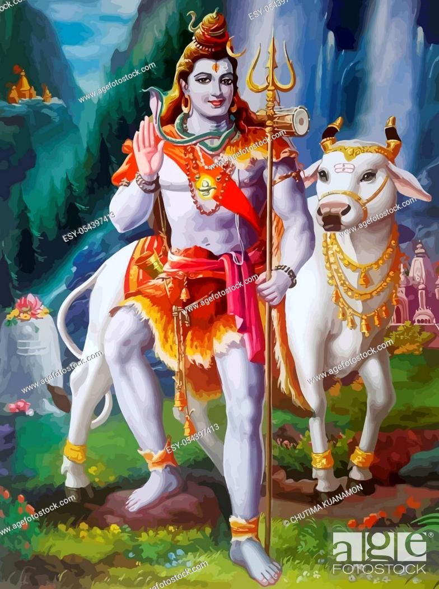
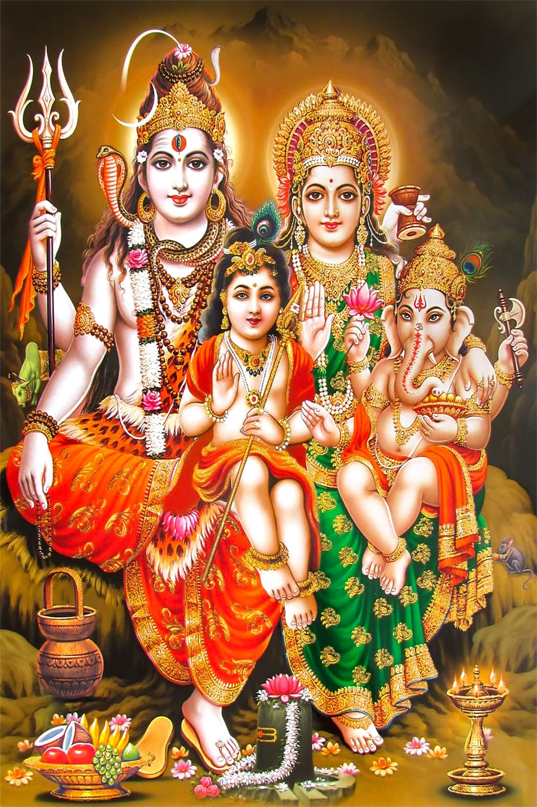

SHIVA - THE DESTROYER

The Hindu God Shiva (Sanskrit: Auspicious One), or Siva, is one of the main Deities of Hinduism, worshiped as the paramount lord by the Saivite sects of India. Shiva is one of the most complex gods of India, embodying seemingly contradictory qualities. He is the destroyer and the restorer, the great ascetic and the symbol of sensuality, the benevolent herdsman of souls and the wrathful avenger.
The Hindu God Shiva was originally known as Rudra, a minor deity addressed only three times in the Rig Veda. He gained importance after absorbing some of the characteristics of an earlier fertility god and became Shiva, part of the trinity, or trimurti, with Vishnu and Brahma.Shiva’s female consort is known under various manifestations as Uma, Sati, Parvati, Durga, and Kali; Shiva is also sometimes paired with Shakti, the embodiment of power. The divine couple, together with their sons—Skanda and the elephant-headed Ganesha—are said to dwell on Mount Kailasa in the Himalayas. The six-headed Skanda is said to have been born of Shiva’s seed, which was shed in the mouth of the god of fire, Agni, and transferred first to the river Ganges and then to six of the stars in the constellation of the Pleiades.
According to another well-known myth, Ganesha was born when Parvati created him out of the dirt she rubbed off during a bath, and he received his elephant head from Shiva, who was responsible for beheading him. Shiva’s vehicle in the world, his vahana, is the bull Nandi; a sculpture of Nandi sits opposite the main sanctuary of many Shiva temples. In temples and in private shrines, Shiva is also worshipped in the form of the lingam, a cylindrical votary object that is often in a yoni.
Shiva is usually depicted in painting and sculpture as white (from the ashes of corpses that are smeared on his body) with a blue neck (from holding in his throat the poison that emerged at the churning of the cosmic ocean, which threatened to destroy the world), his hair arranged in a coil of matted locks (jatamakuta) and adorned with the crescent moon and the Ganges (according to legend, he brought the Ganges River to earth from the sky, where she is the Milky Way, by allowing the river to trickle through his hair, thus breaking her fall). Shiva has three eyes, the third eye bestowing inward vision but capable of burning destruction when focused outward. He wears a garland of skulls and a serpent around his neck and carries in his two (sometimes four) hands a deerskin, a trident, a small hand drum, or a club with a skull at the end. That skull identifies Shiva as a Kapalika (“Skull-Bearer”) and refers to a time when he cut off the fifth head of Brahma. The head stuck to his hand until he reached Varanasi (now in Uttar Pradesh, India), a city sacred to Shiva. It then fell away, and a shrine for the cleansing of all sins, known as Kapala-mochana (“The Releasing of the Skull”), was later established in the place where it landed.